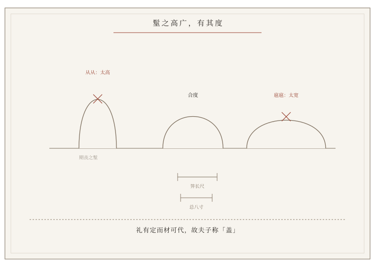

檀弓上 · 三·二十 · 第 223 课
南宫縚之妻之姑之丧，夫子诲之髽，曰「尔毋从从尔，尔毋扈扈尔」；「盖榛以为笄，长尺，而总八寸」。注「从从谓大高，扈扈谓大广」「总，束发垂为饰，齐衰之总八寸」。
说什么事：一个女子为婆婆戴孝，夫子教她把髻做得不要太高、不要太宽。
落在哪一层：礼，兼及礼制与礼意。论丧服之「度」。
为何编在此位：上节论失礼之始，此节论守礼之度。始与度，一救其坏，一防其过。
【经】南宮縚之妻之姑之喪，夫子誨之髽，曰：「爾毋從從爾，爾毋扈扈爾。」「蓋榛以為笄，長尺，而總八寸。」
【注】南宫縚，孟僖子之子南宫阅也，字子容，其妻孔子兄女。诲之髽，教之之为髽也。从从，谓大高；扈扈，谓大广。总，束发垂为饰，齐衰之总八寸。
【疏】此一节论妇人髽与笄总之法。「之，并是语辞」，「南宫縚之妻之姑」，谓縚妻之姑，即縚之母也。期之丧，髽稍轻，自有常法；此诲之者，以縚妻为其姑，是齐衰期，其髽不得如斩衰之高广，故夫子教之。案《左氏》昭七年「孟僖子属说与何忌于夫子」，是孟僖子之子；《世本》「仲孙玃生南宫縚」，是縚为孟僖子之子；《论语》「以其兄之子妻之」，是縚妻为孔子兄之女。「从从」是高貌，故《楚辞》云「山巃嵸兮」，是高峻之貌；「扈扈」是广貌，《尔雅·释山》「卑而大，扈」，是扈为广。「毋得如斩衰高广」者，《丧服传》「总六升，长六寸」，是斩衰之总六寸；此齐衰之总八寸，是齐衰之总长于斩衰；笄则箭笄长一尺，吉笄尺二寸，此用榛为笄，长一尺，是恶笄之类。恶笄者，或用栉，或用榛，故夫子称「盖」以疑之，盖为不定之辞。
姑 夫之母，即婆母。疏「谓縚妻之姑，即縚之母也」。
诲之髽 教她作丧髻。
从从 注「谓大高」。疏引《楚辞》「山巃嵸」，高峻貌。
扈扈 注「谓大广」。疏引《尔雅·释山》「卑而大，扈」。
榛 木名，以为笄。恶笄之属。
总 注「束发垂为饰」。以布束发，余者垂于髻后。
南宫縚之妻为婆母服丧。夫子教她作丧髻，说：「你不要把髻做得太高，也不要做得太宽。」又说：「大概用榛木作笄，长一尺；总长八寸。」
此节极琐：一个髻的高与广，一支笄的长短，一条总的长短。而夫子诲人，正是从这样的琐处入手。两「毋」之后一「盖」，语气一转：先禁其过，再示其法，末一字「盖」留了余地——礼有常，而器可代。
第一层 两个「毋」 「毋从从尔，毋扈扈尔」。注「从从谓大高，扈扈谓大广」。人所易犯者，不是不做，是做过。丧髻本是去饰之髻，若做得又高又宽，则去饰之名在，而去饰之实在亡。礼之失，常失于「过」。
第二层 期之髽与斩衰之髽 疏「期之丧，髽稍轻，自有常法」「不得如斩衰之高广」。同为髽，母与姑有差，斩与齐有差。此层可见古礼服之「等」细到何种地步：连髻的高广都有分。
第三层 笄与总之数 榛笄长一尺，总八寸。疏以《丧服传》斩衰总六寸、此齐衰八寸相对，又以箭笄一尺、吉笄尺二寸为比。数不是随便定的：一尺比吉笄短，八寸比斩衰总长。长短之间，正是身份之度。
第四层 一「盖」字 疏「恶笄者，或用栉，或用榛，故夫子称盖以疑之」。夫子说「盖」，是知道有代用之物而不肯说死。礼有定，而材可代；这一字，是礼的活处。
与今日何干 凡办事，最难的常不是做与不做，而是做到几分。此节可作尺：先定不可过之处（毋从从、毋扈扈），再给可行之数（长尺、八寸）。
| 左 | 右 |
|---|---|
| 南宫縚之妻之姑之丧 | 为其婆母服齐衰期 |
| 夫子诲之髽 | 教之作丧髻 |
| 毋从从尔 | 从从，谓大高 |
| 毋扈扈尔 | 扈扈，谓大广 |
| 期之髽不得如斩衰 | 尊卑有等，高广有差 |
| 盖榛以为笄，长尺 | 榛为恶笄，长比吉笄短 |
| 总八寸 | 束发垂饰，齐衰之总 |
| 一「盖」字 | 礼有定而材可代 |
画一间内室的局部，视点在人的肩后，只见背面与侧影。一位妇人（素衣、麻带）跪坐于席，背对观者，发已束成髻，髻后有布条垂下。她的左侧矮几上放着三样物：一支榛木笄（素木、无饰、长约一尺）、一小段素布（宽窄如一掌）、一只旧栉。光线自右上方入，落在髻与布条上。画面不出现面部。不写文字。赭色只用在榛笄的一端与布条的一段。
